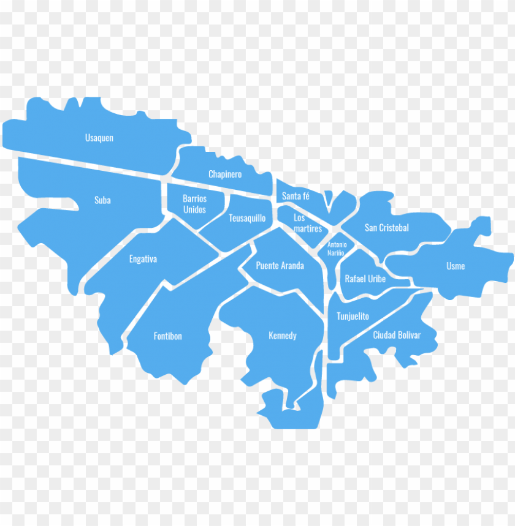

Cómo funciona la plataforma
Consulta y registra alertas comunitarias sobre tu sector en tiempo real.
Categorías de Reportes Urbanos
- Tráfico y Movilidad: Semáforos dañados, choques y trancones.
- Fallas de Infraestructura: Postes sin luz, huecos y fugas de agua.
- Obras y Mantenimiento: Pavimentación y cierres programados.
Mapa de Alertas en Tiempo Real

Registrar un Nuevo Problema
Resumen del Sistema
Total de reportes registrados: 0
Historial de Reportes Registrados
No hay reportes registrados aún.